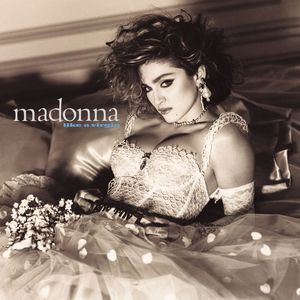
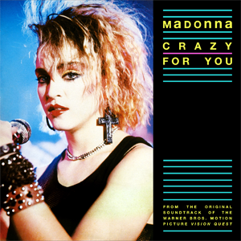
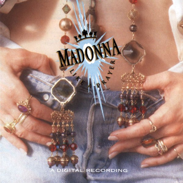
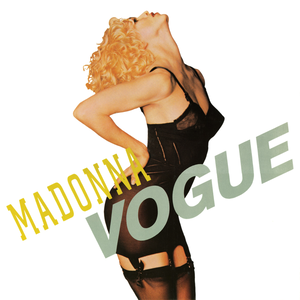

Photo from Wikipedia
Madonna Louise Ciccone, or simply Madonna, is often regarded as one of the most influential artists of all time and is the undisputed “Queen of Pop.” Continually, Madonna cements herself around controversy, from the sexually liberating lyrics of “Like a Virgin” to the Vatican-condemned “Like a Prayer” music video. What makes Madonna special is her ability to break through barriers, not only within the music industry, but in culture. She pushes the limits of the status quo unlike anyone else. Madonna’s work calls listeners to keep going even when the cynics and the critics are the loudest; continue to push the boundaries placed upon you and live your life according to your rules. If you're interested, listen to some of her work by clicking the album covers below!
   Material Girl
Crazy for You
Like A Prayer
Vogue